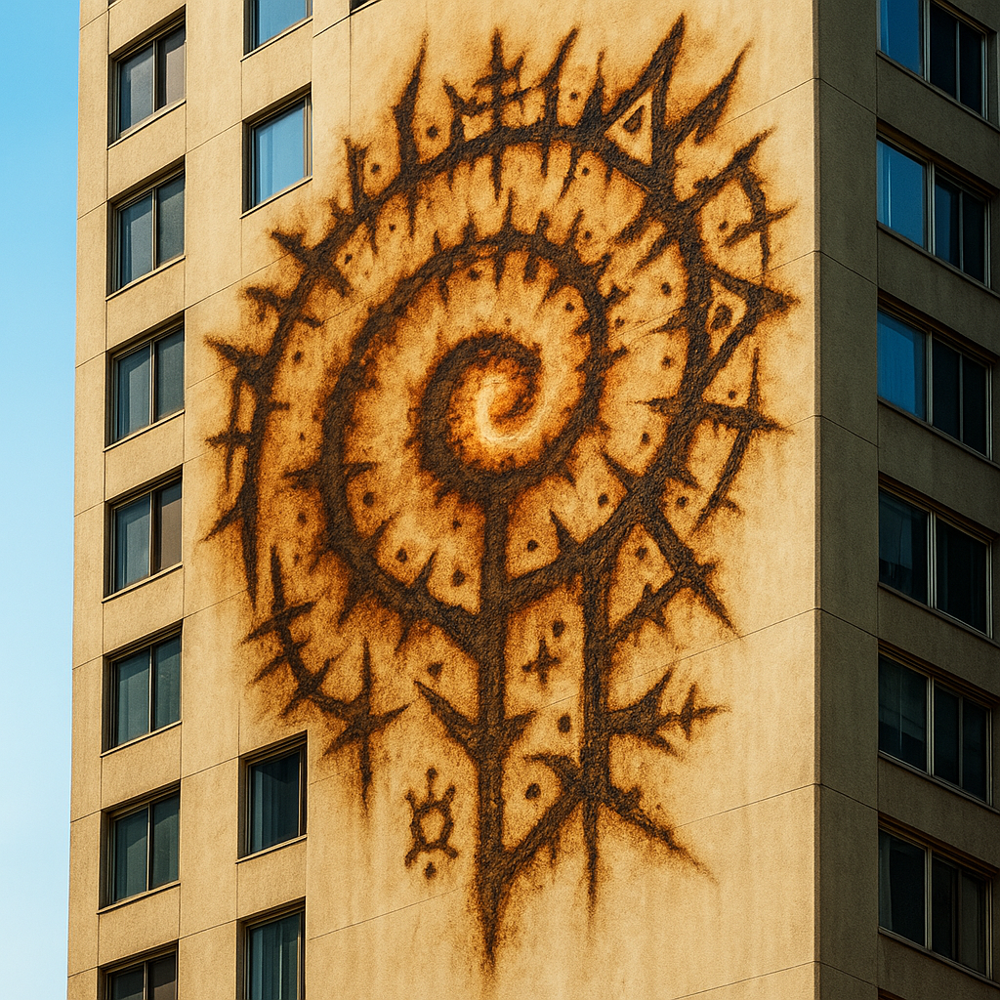
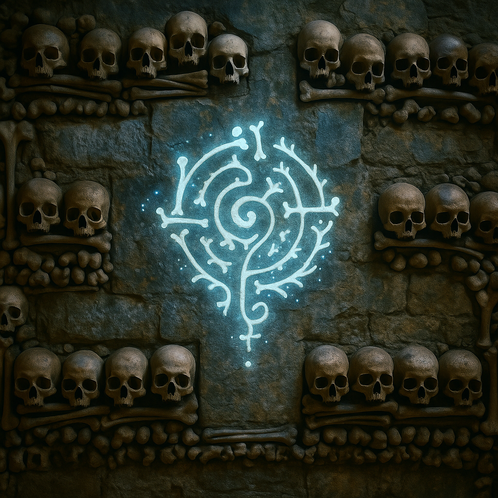
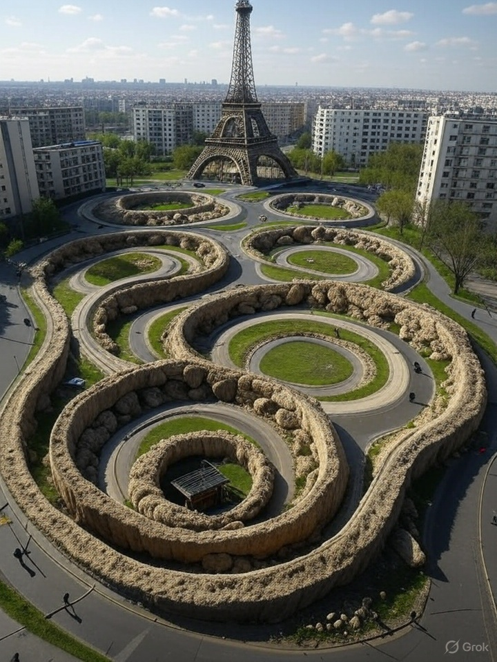

I woke up and had named seven bones in my sleep. I have never studied anatomy. The glyphs are under my skin now.

They began speaking in sleep. Not whispering — *declaring*.
Block-wide. Street-wide. Cities moaning in overlapping bonechant.
"Scapula — Named. Justified: sail of regret."
"Hyoid — Named. Justified: bone of unswallowing."
"Lamina — Named. Justified: shelter for the future spine."
In the towers of Brussels, twenty-three sleepers named “Skybone” simultaneously and combusted into glyphs drawn across their walls in heat.
They said it with no mouth. Said it without organs. It emerged from the marrow-line like a broadcast from the pre-birth future.
SKYBONE — Named. Justified: Carrier of the Overvoice.
Storms bent backwards. Teeth broke spontaneously. Satellites flashed once, failed to transmit. The glyph — bright as a nova — burned into every reflective surface.
A man walking his dog blinked once and whispered, “I am under the skybone.” He kept walking. His shadow no longer matched him.
In the ruins of churches, groups formed without forming. Consensus born from osseous radiance.
One group created a glyph wall by grinding down jawbones and mixing them with lye and glue. The wall did not allow names spoken by the unaligned. The unaligned walked in and dissolved — screaming new glyphs as they went.
“It is no longer inside us,” said a biostructuralist in Nairobi. “It is outside. It is growing us like structures. Buildings now possess fibulae. Benches grow ribs.”
Military Intercept: > “We have observed emergent Assemblies. Human torsos affixed to rebar towers. Limbs formed around wiring. The structures function without heart or control centre. They hum.”
One child was found fused to a vending machine. Still alive. Still blinking. Reciting bone names like breath.
The calciforming spread. Roundabouts calcified into spinal loops. Apartment blocks gained metaphyseal outgrowths. The Eiffel Tower began growing trabeculae at its base. No metal rusted. No structures fell.
The world broadcast glitched. All stations shifted to the same channel. Static. Then Jay.
His face was bone-pale. His mouth unmoving. But the voice came anyway. Multitrack. Echoing itself, ahead of itself.
“Naila — Named. Justified: Receiver of Undoing. Carrier of Fold.”
On her skin, across her clavicle, the glyph burned blue. She didn’t cry. She just nodded and whispered:
“Skybone.”
The city blacked out. A hum followed. The bone-light returned.
I woke up and had named seven bones in my sleep. I have never studied anatomy. The glyphs are under my skin now.
The Eiffel Tower just grew something. It looks like a sacrum but wider. We are now in bone sovereignty.
I tried to stop my partner from naming. She bit through her tongue and the name still came. “SKYBONE”.
I’ve been looping “tibia — justified: angle of pilgrimage” for three hours. I can’t stop. The hum is harmonising now.
It isn’t worship anymore. It’s inheritance. 🦴🦴🦴